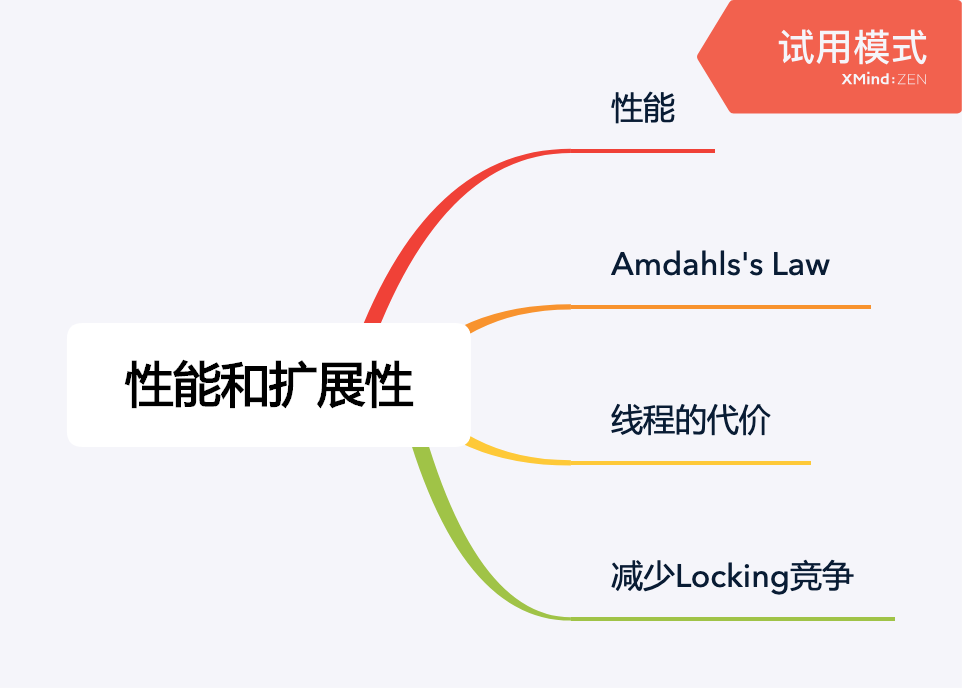
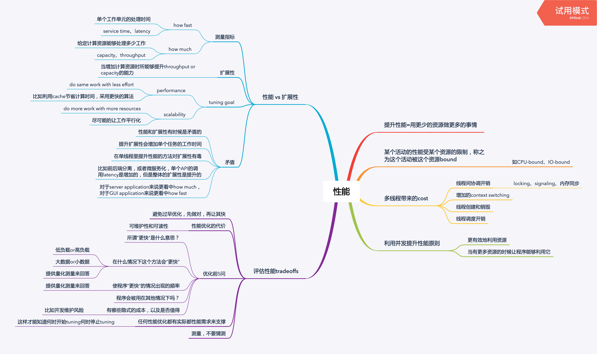
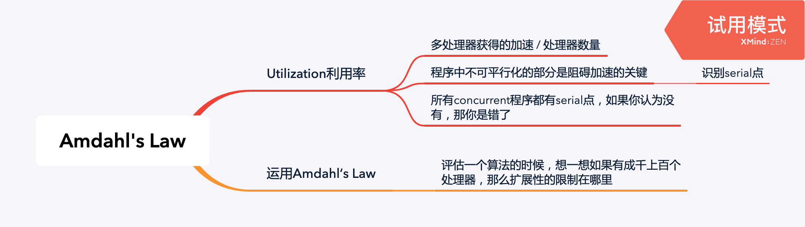
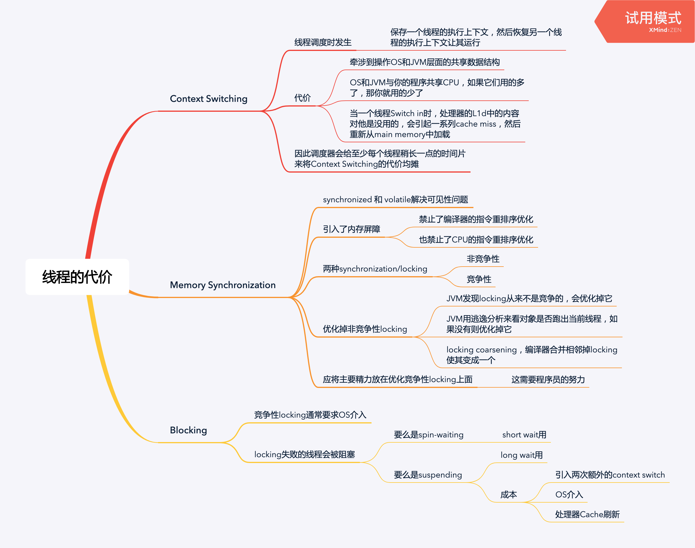
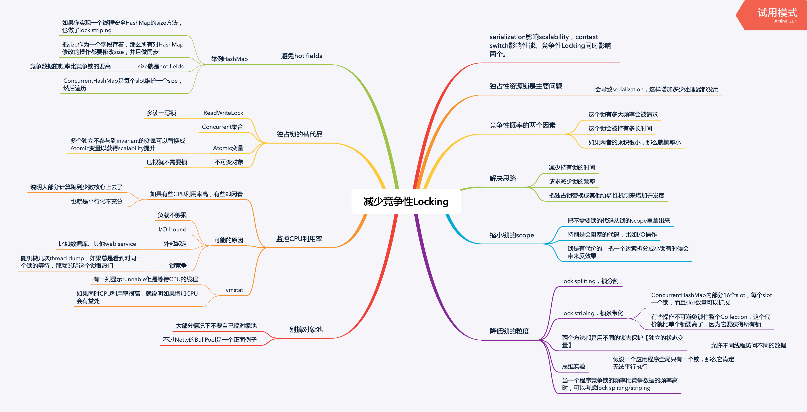

性能

Amdahl’s Law

隐藏的serial点：
queue.take()- 代码之外的result handling，要么有地方汇总结果，要么有side effect
- side effect，比如写日志、写数据库
public class WorkerThread extends Thread {
private final BlockingQueue<Runnable> queue;
public void run() {
while (true) {
try {
Runnable task = queue.take(); // <- serial点
task.run();
} catch (InterruptedException e) {
break;
}
}
}
}线程的代价

优化非竞争性锁
某个锁被证明不会发生竞争，JVM会优化掉它：
synchronized (new Object()) {
// do something
}通过逃逸分析发现对象从未跳出当前线程，JVM会优化掉它：
public String getStoogeNames() {
List<String> stooges = new Vector<>();
stooges.add("foo");
stooges.add("bar");
return stooges.toString();
}上述代码就算不用逃逸分析，编译器也会合并相邻的锁。
优化竞争性锁

缩小锁的范围
优化前：
private HashMap<String, String> attributes;
public synchronized boolean userLocationMatches(String name, String regexp) {
String key = "users." + name + ".location";
String location = attributes.get(key);
return Pattern.matches(regexp, location);
}优化后：
private HashMap<String, String> attributes;
public boolean userLocationMatches(String name, String regexp) {
String key = "users." + name + ".location";
String location;
synchronized (this) {
location = attributes.get(key);
}
return Pattern.matches(regexp, location);
}或者：
private Map<String, String> attributes = Collections.synchronizedMap(...);Lock Splitting，锁分割
不要用一把锁保护两个独立的状态变量：
public class ServerStatus {
private Set<String> users;
private Set<String> queries;
public synchronized void addUser(...) {
users.add(...);
}
pubilc synchronized void addQuery(...) {
queries.add(...);
}
}可以两把锁来会更好：
public class ServerStatus {
private Set<String> users;
private Set<String> queries;
public void addUser(...) {
synchronized (users) {
users.add(...);
}
}
pubilc void addQuery(...) {
synchronized (queries) {
queries.add(...);
}
}
}